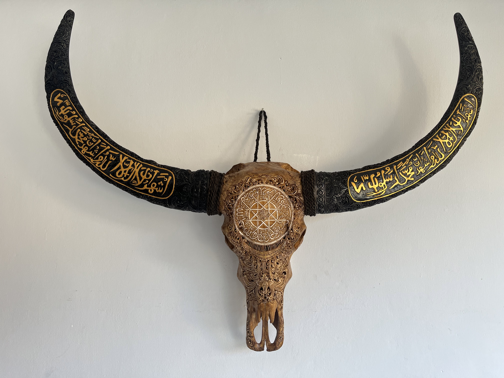
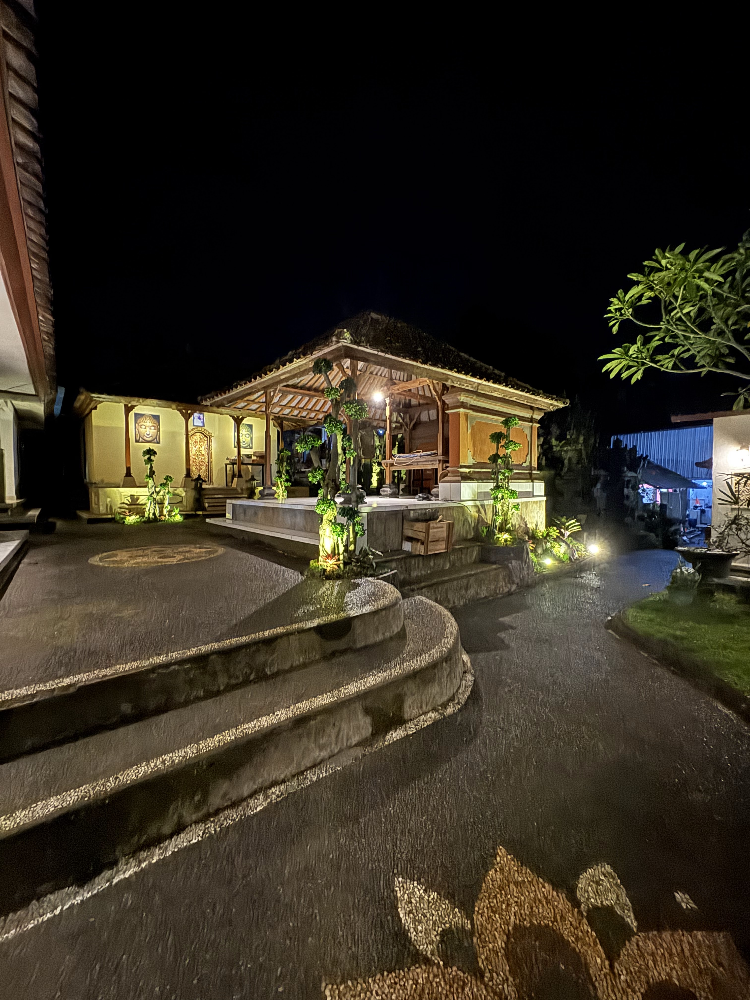

Pelestarian Budaya Bali
Setiap motif Barong, Patra, dan Mandala dipahat langsung dengan tangan, menjaga keaslian cerita dan tradisi kriya Gianyar.
Cahaya Dewata Handycraft adalah UMKM pengrajin lokal Tampaksiring yang mengolah limbah tulang dan tanduk hewan menjadi karya seni bernilai tinggi—dari ukiran tengkorak motif khas Bali, dekorasi rumah, kalung, hingga miniatur siap ekspor.


Setiap motif Barong, Patra, dan Mandala dipahat langsung dengan tangan, menjaga keaslian cerita dan tradisi kriya Gianyar.
100% mengolah limbah tulang dan tanduk hewan ternak yang tidak terpakai menjadi karya seni abadi yang bersih dan aman.
Tumbuh bersama warga Banjar Manukaya Anyar dan menjembatani karya tulus pengrajin menuju pasar wisata dan ekspor dunia.

.jpeg)
Berawal dari ketekunan tangan pengrajin di Banjar Manukaya Anyar, Tampaksiring, Gianyar, Bali, Cahaya Dewata Handycraft memadukan pelestarian budaya leluhur dengan kepedulian nyata terhadap lingkungan.
Bagi kami, limbah tulang dan tanduk hewan bukanlah akhir dari sebuah siklus, melainkan kanvas alami yang menunggu untuk dihidupkan kembali. Melalui kesabaran, ketelitian, dan penghormatan terhadap seni ukir Bali, bahan-bahan alam tersebut disulap menjadi dekorasi rumah, hiasan dinding, kalung, mainan, miniatur, hingga patung tengkorak berukir motif tradisional Bali.
Setiap karya yang lahir dari bengkel kerja kami membawa autentisitas budaya serta mendukung kesejahteraan keluarga pengrajin setempat. Kini, karya Cahaya Dewata Handycraft tidak hanya dicari oleh wisatawan yang berkunjung ke Bali, tetapi juga telah menembus pasar kolektor dan ekspor internasional.
“Kami tidak sekadar membuat cendera mata, melainkan merawat cerita, tradisi ukir Bali, dan wujud syukur atas alam yang diolah kembali dengan sepenuh hati.”— Keluarga Pengrajin Cahaya Dewata Handycraft, Manukaya Anyar
Setiap karya melewati rangkaian proses tradisional yang higienis, sabar, dan penuh ketelitian sebelum hadir di ruang Anda.
Kami hanya menggunakan limbah tulang dan tanduk hewan ternak yang telah dibersihkan secara higienis—aman, etis, dan berkelanjutan.
Klik foto untuk melihat detail ukiran lebih dekat atau langsung berdiskusi dengan pemilik mengenai ukuran, motif custom, dan ketersediaan via WhatsApp.
Selain koleksi di atas, kami melayani pembuatan dekorasi rumah, kalung tulang, mainan seni, serta ukiran motif khusus (logo, kaligrafi, Barong, atau Mandala) sesuai permintaan Anda.
Tidak perlu sistem yang rumit—Anda dapat langsung berbincang dengan pemilik melalui WhatsApp untuk menanyakan koleksi, harga, pesanan custom, atau menjadwalkan kunjungan ke Banjar Manukaya Anyar.
Cahaya Dewata Handycraft — Tampaksiring, Gianyar, Bali
Isi pesan singkat di bawah ini, lalu klik tombol kirim untuk langsung membuka percakapan WhatsApp bersama pemilik Cahaya Dewata Handycraft.